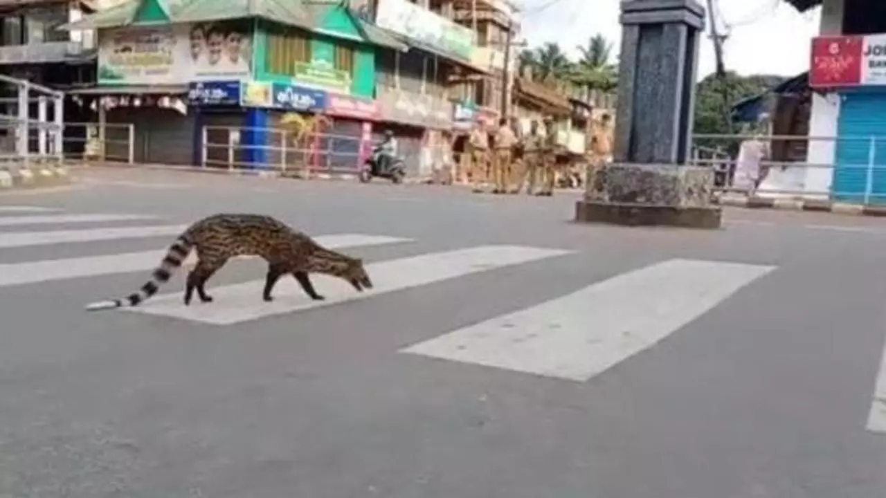

COVID-19 on wildlife
Ramizah Tayiba. 7/24/2020

An endangered civet cat is seen in Kerala, India. (Malayala Manorama)
An endangered civet cat is seen in Kerala, India. (Malayala Manorama)
The coronavirus outbreak has confined the human population to their homes. The global lockdown has brought most human activities to a complete halt. And while we are stuck inside, wildlife seems to be bouncing back.
Wildlife seems to be getting a break amidst the pandemic. Aquatic wildlife has been given a huge rest as most commercial fishing has paused. Satellites have confirmed that fishing has decreased by 80 percent in West Africa and China. This is beneficial to aquatic life as overfishing has reduced the population of large predatory fish like the Bluefish Tuna and the Mediterranean Swordfish by 90 percent compared to pre-industrial fishing. The effects of COVID-19 extend to beaches as well. Beaches all over the world have seen larger numbers of sea turtles nesting. During the lockdown, over 70,000 leather sea turtles have comfortably nested in the empty beaches of Florida. Scientists have also noticed that the turtles are bigger and healthier. Additionally, larger marine animals like seals and dolphins have been spotted in regions they haven’t occupied in decades.
Major cities all over the world are seeing changes in wildlife. With humans under quarantine, animals have been exploring areas usually populated by people. In San Francisco, coyotes are exploring beyond their natural territory by roaming the streets of residential areas. Photographs of wild deer on train tracks have been taken in Nara, Japan. Turkey, a popular tourist destination, can now see wild boars fearlessly wandering highways. Animals are becoming increasingly comfortable further penetrating into urban areas.
The lockdown also allowed for the emergence of more endangered animals like the civet cat that has been spotted casually roaming the vacant streets of Kerala, India. With their biggest threat and disturbance (humans) trapped indoors, animals are now reclaiming their territory.
Forests and National Parks have seen changes in animal behavior as well. Yosemite National Park, which attracts about 4 million tourists annually, is now seeing more animals resurfacing. Wildlife is less shy and coming out of hiding. In Kruger National Park in South Africa, prides of lions have been spotted sleeping in vacant parking lots.
This lockdown has made it clear that the biggest threat and disturbance to wildlife was and forever will be humans. Without us, wildlife is now thriving.
Cover Photo: (Greatstock / Barcroft Images)